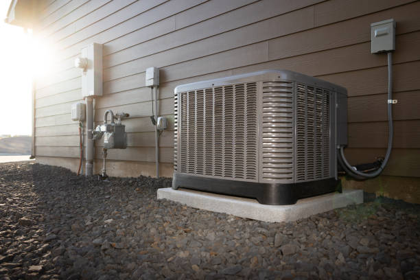
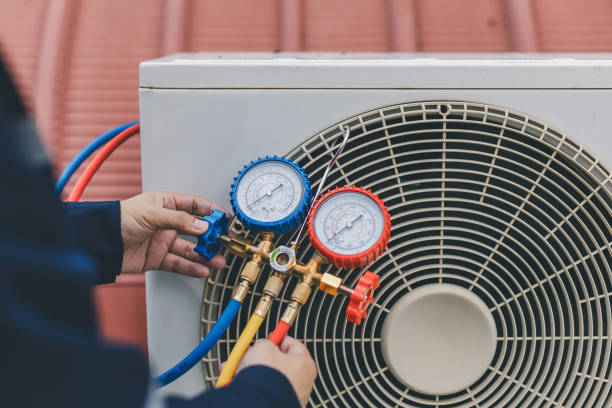

Expert Ductwork Services Throughout Williamson, WV
Properly designed and maintained ductwork is essential for efficient HVAC system operation, optimal comfort, and good indoor air quality. Our comprehensive ductwork services help Williamson, WV homeowners and businesses achieve maximum performance from their heating and cooling systems while ensuring clean, healthy air distribution throughout their properties. Whether you need new duct installation, repairs to existing ductwork, professional cleaning, or air sealing services, our experienced technicians provide solutions that improve comfort and efficiency.
Comprehensive Ductwork Solutions
Our ductwork services address all aspects of air distribution systems, from initial design and installation to ongoing maintenance and optimization. We work with all types of ductwork materials and configurations to provide solutions tailored to your specific needs and property characteristics.
Our ductwork services include new ductwork design and installation, existing ductwork repair and modification, duct cleaning and sanitization, air sealing and insulation services, ductwork replacement and upgrading, airflow balancing and optimization, commercial ductwork installation, emergency ductwork repairs, and indoor air quality ductwork improvements.
New Ductwork Installation
Whether you're building a new home, adding space to your existing property, or installing a new HVAC system, proper ductwork design and installation are crucial for optimal system performance and energy efficiency. Our new ductwork installations ensure proper air distribution and system efficiency.
New installation services include comprehensive ductwork design and sizing, proper material selection for durability and efficiency, strategic placement for optimal air distribution, insulation installation for energy efficiency, air sealing to prevent energy loss, integration with heating and cooling systems, compliance with local building codes, and comprehensive testing and balancing.
Ductwork Repair and Modification
Existing ductwork often develops problems over time, including leaks, damage, poor connections, and inadequate sizing. Our repair and modification services address these issues to restore proper airflow and system efficiency.
Repair services include leak detection and sealing, damaged duct section replacement, disconnected duct reconnection, ductwork rerouting for renovations, sizing modifications for improved airflow, insulation repair and replacement, damper installation and repair, and airflow balancing after modifications.
Professional Duct Cleaning
Over time, ductwork accumulates dust, debris, allergens, and other contaminants that can affect indoor air quality and system efficiency. Our professional duct cleaning services remove these contaminants and restore clean air distribution.
Duct cleaning includes comprehensive system inspection and assessment, powerful vacuum extraction of debris and contaminants, brush cleaning of duct surfaces, sanitization and deodorization treatments, filter replacement and upgrading, vent and register cleaning, dryer vent cleaning services, and post-cleaning system performance verification.
Air Sealing and Insulation
Leaky, uninsulated ductwork can waste significant energy and reduce comfort. Our air sealing and insulation services help Williamson, WV property owners improve energy efficiency and comfort while reducing utility costs.
Sealing and insulation services include duct leakage testing and identification, comprehensive air sealing with appropriate materials, ductwork insulation installation and repair, vapor barrier installation where needed, access panel sealing and gasket replacement, connection point sealing and reinforcement, and energy efficiency verification and testing.
Ductwork for Different HVAC Systems
Different types of HVAC systems have specific ductwork requirements. Our expertise includes ductwork design and installation for all system types, ensuring optimal performance regardless of your heating and cooling equipment.
System-specific ductwork includes traditional furnace and central air ductwork, heat pump system air distribution, dual-fuel system ductwork, zoned system dampers and controls, high-efficiency system requirements, commercial HVAC ductwork, and integration with ductless systems for hybrid solutions.
Zoning Systems and Controls
Zoning systems allow different areas of your home or business to be heated and cooled independently, providing personalized comfort and energy savings. Our zoning system installation includes the necessary ductwork modifications and control systems.
Zoning services include zone system design and planning, motorized damper installation, zone control panel installation, thermostat installation for each zone, ductwork modification for zoning, airflow balancing for optimal performance, bypass damper installation when required, and system programming and optimization.
Commercial Ductwork Services
Commercial properties have unique ductwork requirements including larger capacity systems, complex layouts, specialized materials, and code compliance considerations. Our commercial ductwork services address these specific needs.
Commercial services include large-scale ductwork design and installation, commercial-grade materials and construction, fire-rated ductwork installation, exhaust and ventilation ductwork, kitchen and specialty ventilation systems, compliance with commercial building codes, coordination with other building systems, and planned installation to minimize business disruption.
Ductwork Materials and Quality
We use only high-quality ductwork materials appropriate for each application, ensuring durability, efficiency, and longevity. Our material selection considers factors including application requirements, building codes, energy efficiency goals, and budget considerations.
Material options include galvanized steel ductwork for durability, flexible ductwork for easier installation, fiberglass duct board for thermal efficiency, PVC ductwork for special applications, spiral ductwork for commercial applications, insulated ductwork for energy efficiency, and specialized materials for unique applications.

Ductwork Design and Engineering
Proper ductwork design is essential for system efficiency, comfort, and performance. Our design process considers all factors that affect air distribution including building layout, HVAC equipment specifications, airflow requirements, and energy efficiency goals.
Design services include detailed load calculations and airflow requirements, ductwork layout and sizing optimization, material specification and selection, insulation and sealing requirements, code compliance verification, energy efficiency optimization, and comprehensive installation drawings and specifications.
Airflow Testing and Balancing
Even properly installed ductwork may require testing and balancing to ensure optimal airflow distribution. Our testing and balancing services verify that your system delivers the right amount of conditioned air to each space.
Testing services include comprehensive airflow measurement, static pressure testing, temperature verification throughout the system, humidity level assessment, air quality testing, system performance optimization, damper adjustment and balancing, and detailed performance reporting.
Energy Efficiency Improvements
Ductwork improvements can significantly impact HVAC system energy efficiency. Our services help Williamson, WV property owners reduce energy consumption while improving comfort and system performance.
Efficiency improvements include duct sealing to eliminate energy waste, insulation upgrades for better thermal performance, sizing optimization for improved efficiency, airflow balancing for optimal performance, high-efficiency filtration integration, variable air volume systems for commercial applications, and energy recovery ventilation integration.
Maintenance and Ongoing Care
Regular ductwork maintenance helps ensure continued performance, efficiency, and air quality. Our maintenance programs include ductwork inspection and care as part of comprehensive HVAC system maintenance.
Maintenance services include regular ductwork inspection for damage or leaks, filter replacement and airflow verification, connection point inspection and tightening, insulation condition assessment, damper operation verification, air quality assessment, cleaning recommendations based on usage, and preventive maintenance to avoid problems.
Emergency Ductwork Repairs
Ductwork problems can cause significant comfort issues and energy waste. Our emergency repair services include urgent ductwork repairs to restore proper system operation quickly.
Emergency repairs include major duct disconnection repairs, significant leak sealing, damaged duct section replacement, airflow restoration after damage, emergency air quality issues, temporary ductwork solutions when needed, and rapid response for urgent ductwork problems.
Indoor Air Quality Integration
Ductwork plays a crucial role in indoor air quality. Our services include integration of air quality improvement systems with your ductwork for comprehensive air treatment.
Air quality integration includes high-efficiency filtration system installation, UV light purification system integration, whole-home humidification systems, air purification system installation, fresh air ventilation integration, exhaust ventilation coordination, and comprehensive air quality system design.
Service Areas and Scheduling
We provide ductwork services throughout Williamson, WV including Downtown Williamson, Red Jacket, Kermit, and all other Williamson, WV neighborhoods. Our scheduling accommodates both residential and commercial needs.
Scheduling options include convenient residential service appointments, commercial installation during off-business hours, emergency ductwork repair availability, seasonal ductwork maintenance scheduling, and coordinated installation with other HVAC work.
Cost-Effective Ductwork Solutions
We provide ductwork solutions that balance performance, efficiency, and cost-effectiveness. Our estimates include options for different approaches and budgets, helping you choose the best solution for your needs and financial situation.
Cost considerations include repair vs. replacement analysis, phased improvement options for budget management, energy savings calculations to justify investments, financing options for larger projects, and long-term value assessment for ductwork improvements.
Contact Us for Ductwork Services
Ready to improve your HVAC system performance with professional ductwork services? Contact our Williamson, WV ductwork experts today for comprehensive evaluation and expert recommendations. Our experienced technicians are ready to help optimize your air distribution system for maximum comfort and efficiency.
Whether you need new ductwork installation, repairs to existing systems, professional cleaning, or energy efficiency improvements, we're here to provide ductwork services that enhance your HVAC system performance. Call us at (888) 918-9104 or complete our online service request form to schedule your ductwork consultation.